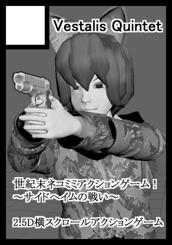
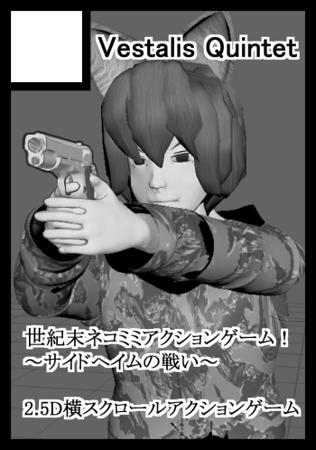

Primates selection ～サイドヘイムの戦い～

作品情報
発表予定：2016年冬
対応環境：Windows PC
ジャンル：横スクロールアクションシューティング
世紀末ネコミミガンアクション、プライメイツセレクションの短編シナリオです。
軍用バイオネコミミ・ジルを操作して、サイドヘイム駅前発掘キャンプを襲撃した賊を排除せよ！

発表予定：2016年冬
対応環境：Windows PC
ジャンル：横スクロールアクションシューティング
世紀末ネコミミガンアクション、プライメイツセレクションの短編シナリオです。
軍用バイオネコミミ・ジルを操作して、サイドヘイム駅前発掘キャンプを襲撃した賊を排除せよ！